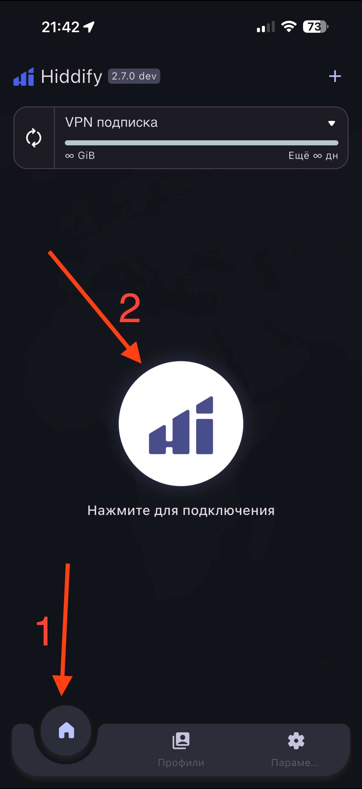

01
ANDROID
Установите Hiddify
Откройте Google Play, найдите приложение Hiddify и нажмите «Установить». Затем откройте приложение.
Подключите VPN за несколько простых шагов. Подойдёт для телефона и компьютера.
Начать подключение ↘Все приложения и инструкции с картинками ↗
Вам понадобится только устройство
и ваша личная ссылка подписки
Выберите своё устройство — покажем, что делать дальше. Названия кнопок могут немного отличаться в разных версиях приложения.
Откройте Google Play, найдите приложение Hiddify и нажмите «Установить». Затем откройте приложение.
Скопируйте личную ссылку, которую вы получили. В Hiddify нажмите «+» и выберите добавление из буфера обмена. Либо отсканируйте полученный QR-код.
Ссылка и QR-код дают доступ к вашей подписке. Не публикуйте их и не пересылайте посторонним.
Пример: Hiddify 2.7 на iPhone. На Android и в новых версиях внешний вид может отличаться; кнопки имеют похожие названия. Нажмите на снимок, чтобы увеличить.
Снимки интерфейса из исходной инструкции. Показана более старая версия приложения.
Пример для Windows: Hiddify 2.0, кнопки могут выглядеть иначе.

На главном экране нажмите большую кнопку подключения. При первом запуске разрешите создание VPN-подключения, если устройство попросит.
✓ Дождитесь статуса «Подключено»
Пример: Hiddify 2.7 на iPhone. В других версиях экран может отличаться.

В Hiddify откройте список «Прокси» и выберите страну вручную или нажмите Auto / lowest для автоматического выбора по задержке. При отказе узла автоматический режим может переключиться на другой; подключение при этом может ненадолго прерваться.
Несколько простых решений для самых частых ситуаций.
Не получилось разобраться? Напишите нам в чат.
Чат в Telegram ↗Для открытия может понадобиться вход в Telegram и участие в чате.Проверьте подключение к интернету и скопируйте ссылку целиком без пробелов. Попробуйте другую сеть — например, мобильную вместо Wi-Fi. Если ошибка остаётся, обратитесь в поддержку и не отправляйте ссылку в общий чат.
Подождите немного, затем отключите и снова включите VPN. Проверьте интернет без VPN и попробуйте другую сеть. Если проблема сохраняется, обновите подписку и сообщите в поддержку текст ошибки без ссылки или QR-кода.
На главном экране Hiddify нажмите значок обновления рядом с подпиской. Приложение может обновлять её и автоматически, если эта функция включена и адрес подписки доступен.
Откройте «Прокси» в Hiddify и нажмите на нужную страну. Для автоматического выбора по задержке выберите Auto или lowest. Режим balance распределяет соединения между серверами. Если стран не видно, обновите подписку; названия и расположение кнопок зависят от версии приложения.
Личная ссылка — это доступ к вашей подписке. Храните её как пароль; для другого человека лучше получить отдельную подписку. Не публикуйте ссылку и QR-код в интернете.
Пусть всё просто работает.